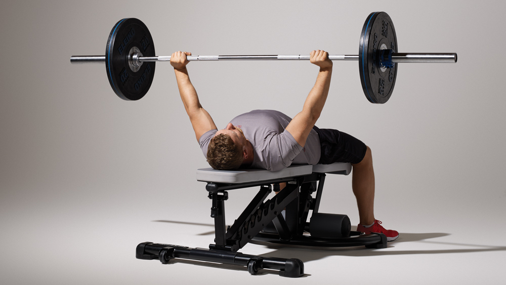
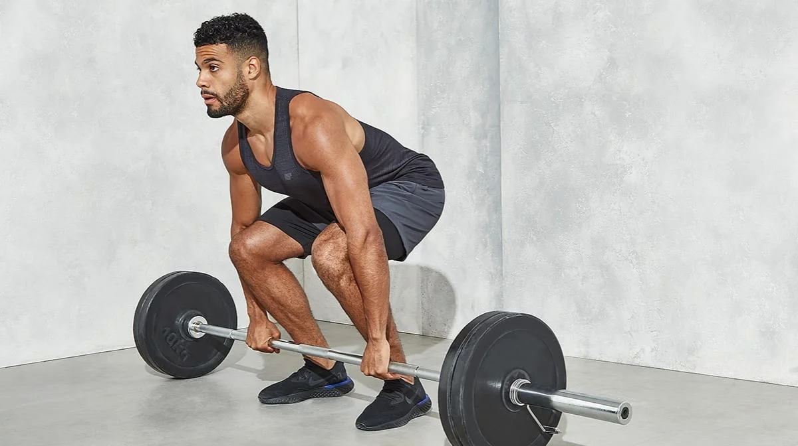

FitTrack - Довідник силових та функціональних вправ
Платформа для планування тренувань, аналізу техніки та прогресу навантажень.
Параметри підбору вправ
Каталог вправ
Оберіть техніку з переліку для включення до тренувальної програми.
Присідання зі штангою на плечах
Категорія: Ноги
Класичні присідання (Back Squat)
Базовий обсяг:
8 повторень у підході
Складність:
Середній
Дата оновлення техніки:
Базова вправа:
Так
Опис техніки: Ноги на ширині плечей, спина пряма з природним прогином. Опускайтеся до паралелі стегон із підлогою, тримаючи коліна на одній лінії з носками.
Жим штанги лежачи
Категорія: Грудні

Жим штанги на горизонтальній лаві
Базовий обсяг:
10 повторень у підході
Складність:
Початковий
Дата оновлення техніки:
Базова вправа:
Так
Опис техніки: Зведіть лопатки, зафіксуйте стопи на підлозі. Опускайте гриф під контролем на рівень нижньої частини грудей, після чого потужно тисніть угору без відриву таза.
Станова тяга
Категорія: Спина

Класична станова тяга з помосту
Базовий обсяг:
5 повторень у підході
Складність:
Просунутий
Дата оновлення техніки:
Базова вправа:
Так
Опис техніки: Початкове положення — штанга торкається гомілок. Рух починається з розгинання ніг, спина зберігає нейтральне положення, штанга рухається суворо вздовж ніг.
Підтягування на перекладині
Категорія: Спина
Підтягування на перекладині прямим хватом
Базовий обсяг:
12 повторень у підході
Складність:
Середній
Дата оновлення техніки:
Базова вправа:
Так
Опис техніки: Вихідна точка - повне розгинання рук у висі. Без ривків та розгойдування тягніть груди до перекладини зусиллям найширших м'язів спини, зводячи лопатки.
Армійський жим стоячи
Категорія: Плечі
Жим штанги стоячи (OHP)
Базовий обсяг:
8 повторень у підході
Складність:
Середній
Дата оновлення техніки:
Базова вправа:
Так
Опис техніки: Стопи на ширині плечей, сідниці та м'язи кору напружені. Тисніть штангу від ключиць угору по вертикальній траєкторії, фіксуючи руки над потилицею.
Планка на ліктях
Категорія: М'язи кору
Ізометричне утримання планки
Базовий обсяг:
60 секунд під навантаженням
Складність:
Початковий
Дата оновлення техніки:
Базова вправа:
Ні
Опис техніки: Лікті розташовані під плечовими суглобами. Утримуйте тіло в рівній лінії від верхівки до п'ят без прогину в попереку чи підйому таза догори.
Про автора проєкту
Мартиненко Олександр - Студент спеціальності «Комп'ютерні науки»
Я поєдную вивчення сучасних інженерних технологій веброзробки із систематичними силовими тренуваннями в залі. Мій досвід показав, що чітке розуміння біомеханіки рухів так само важливе, як і правильна семантика коду.
Мета мого семестрового проєкту - створити повнофункціональний, швидкий та доступний вебсервіс, який дозволить користувачам будувати тренувальні спліти, фільтрувати базу вправ за цільовими м'язами та відстежувати робочий обсяг.